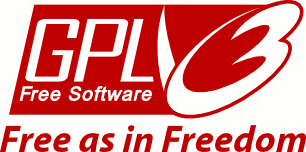

License
HornetsEye is free software; you can redistribute it and/or modify it under the terms of the GNU General Pubic License as published by the Free Software Foundation; either version 3 of the License, or (at your option) any later version.

HornetsEye is distributed in the hope that it will be useful, but without any warranty; without even the implied warranty of merchantibility or fitness for a particular purpose. See the GNU General Public License for more details.
You should receive a copy of the GNU General Public License along with every copy of this program. If not, see www.gnu.org/licenses/.
Copyright © 2006, .., 2017 Jan Wedekind, Eastleigh, United Kingdom.